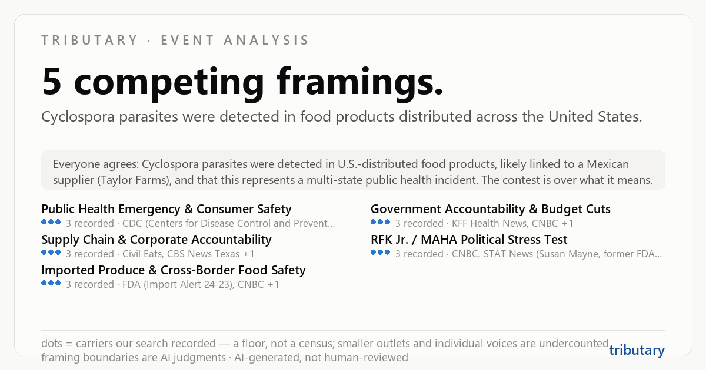

Goal: one glance says "one event, several stories, and here is what they all share."
1200×630, works as a social unfurl.
Baseline · today's event card (July design)
Accurate but text-first — a list with no shape. Old identity, and the overlap
(the mission's hero content) is a gray box that reads as fine print.

Concept A · The delta (recommended)
The brand drawn as data: one event flows in, splits into equal channels — one per
framing, named with its carriers — and every channel runs over the same riverbed: the
shared-ground band. Split AND overlap in one shape; equal channel weights on purpose
(carrier counts are floors, not magnitudes).
Concept B · The grid, restyled (conservative option)
Keeps today's information layout but adopts the identity: ink band, the agreement
promoted to a teal hero strip under the headline, framings as two clean columns with teal
channel dots. Less shape, more room for six-plus framings; the fallback design for crowded events.